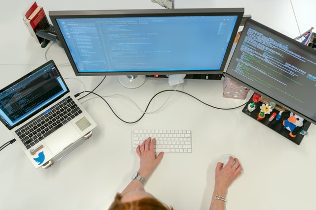
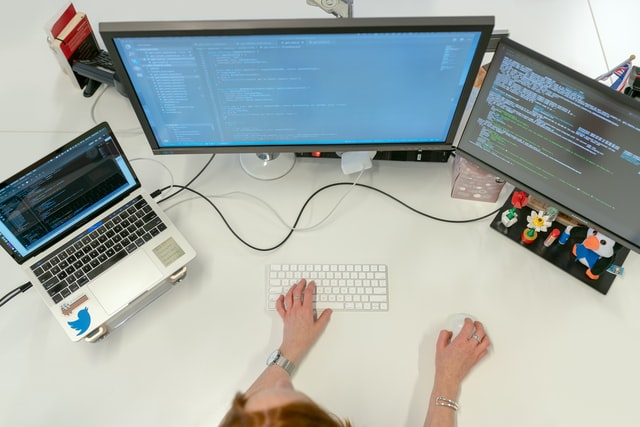
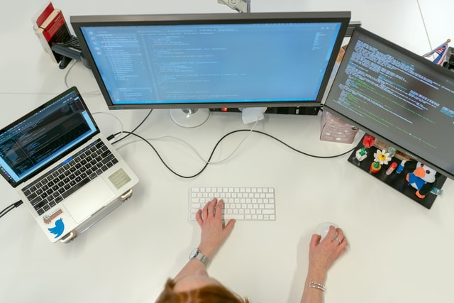

Web development is the process of creating a website or a web application.
There are many approaches to web development. However, any website or web application will always consist of the three following core technologies:
A website can be of two types:
The architecture of a website or a web application can be divided into two layers of web development:
One can specialize in one specific web development layer or specialize in both layers, which is often called full-stack development.
There exists many web frameworks and libraries such as React, Vue, Angular, Flask, Django, and jQuery that can help speedup development by providing common structures (i.e. not developing from scratch).
Click on the links on the left to learn more about the specific technology that can be found in web development. (The links will open a new tab with the Wikipedia page of the selected technology)
Learn more about web dev at Mozilla MDN
